Challenge: How could you tell if the topoisomerase is making positive or negative supercoils?
- Use 2D gel electrophoresis(different tool)
- EtBr
- Use the topoisomerase that can only relax negative supercoil
The type I?
This week’s learning objectives:
- Explain how the binding of proteins to DNA can affect DNA topology.
- Describe the structure of nucleosomes and give examples of how they are packaged into higher order chromatin structures.
- Analyze experiments that determine nucleosome positioning and organization in the cell.
Higher Order Chromatin Structure Involves Multiple Levels of Compaction
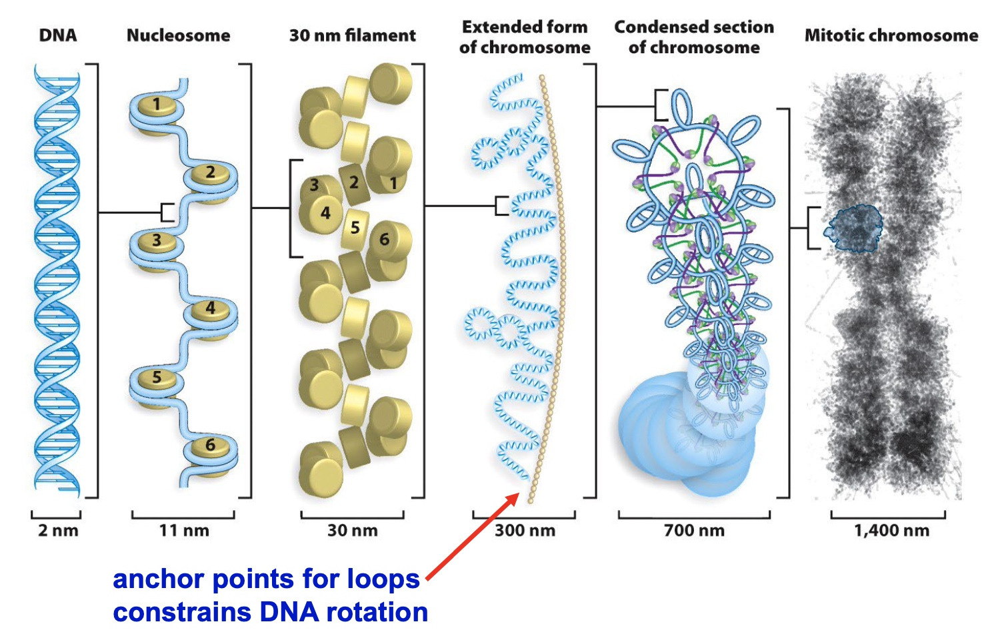
Topoisomerase would like to access the supercoiled DNA to make them relaxed.
Why is genomic DNA negatively supercoiled?
- helps to package DNA
- makes DNA easier to unwind
Ways to induce negative supercoiling in vivo
Bacteria –
DNA gyrase
Eukaryotes –
nucleosomes + topoisomerases
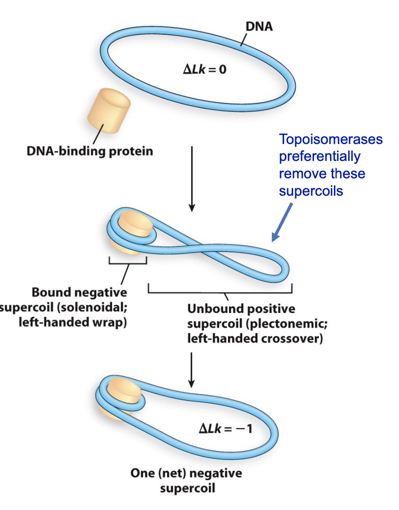
Design an Experiment to show that nucleosome assembly causes negative supercoiling
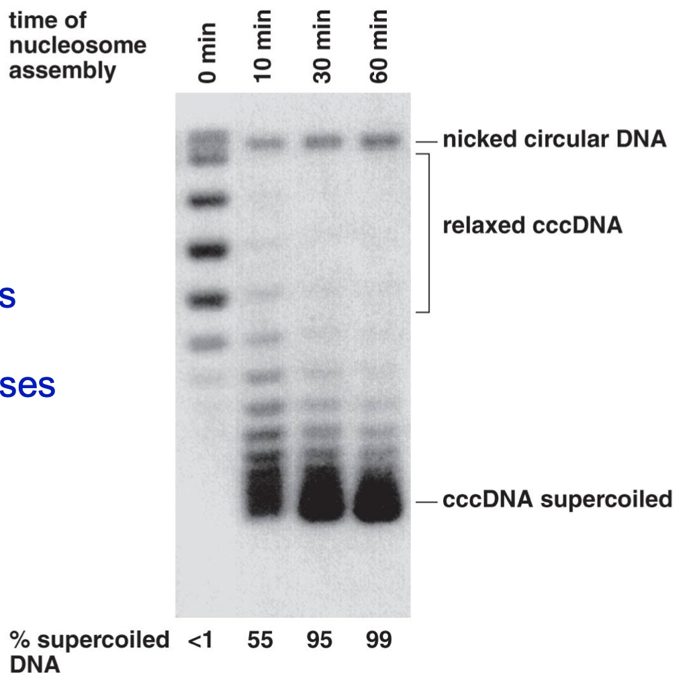
- Incubate DNA with nucleosomes
- Add purified topoisomerases
- Topoisomerases will preferentially remove positive plectonemic supercoils
- Add SDS to inactivate the topoisomerases and remove the nucleosomes
- The negative supercoils will remain
But we do not know the supercoil is negative or postive just according to this experiment.
Nucleosomes are ~146 bp of DNA + 8 histone subunits
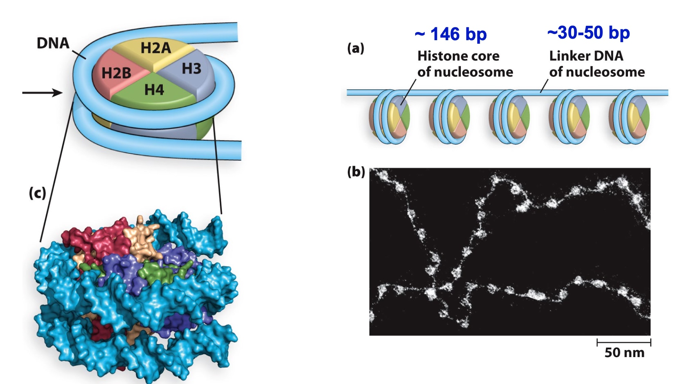
Protein composition of a typical nucleosome
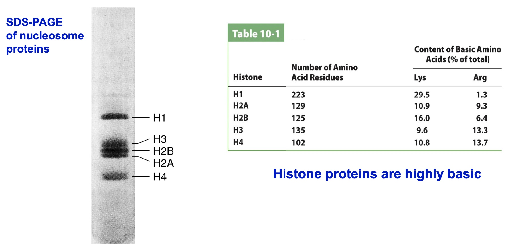
Histone proteins are highlt basic.(positively charged)
Poll Everwhere
In SDS-PAGE, histones migrate more slowly than they should based on their molecular weight.
What could explain this?
- A. Histones are not denatured by SDS
- B. Histones have more positive charge than other proteins
- C. Histones run as octamers on SDS-PAGE gels
- D. Histones have more negative charge than other proteins
- E. Histones are more stable than other proteins
The principle of SDS-PAGE is coating proteins negatively charged and make them move in the electro current. If the protein is positively charged, then it will be charged with less negatively charged.
Histone Binding with DNA
Histone proteins have non-specific interactions with oxygen atoms in the DNA backbone and with bases in the minor groove
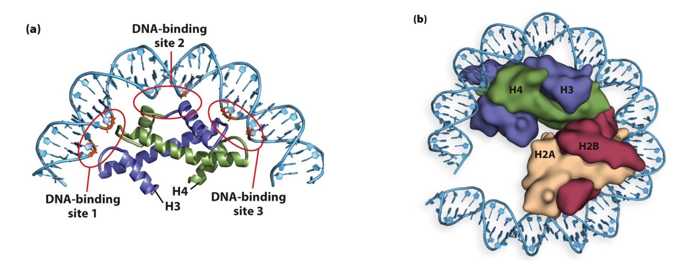
DNA sequence can affect nucleosome binding
The A-T base pair preference facilitates minor groove compression and assists with DNA bending
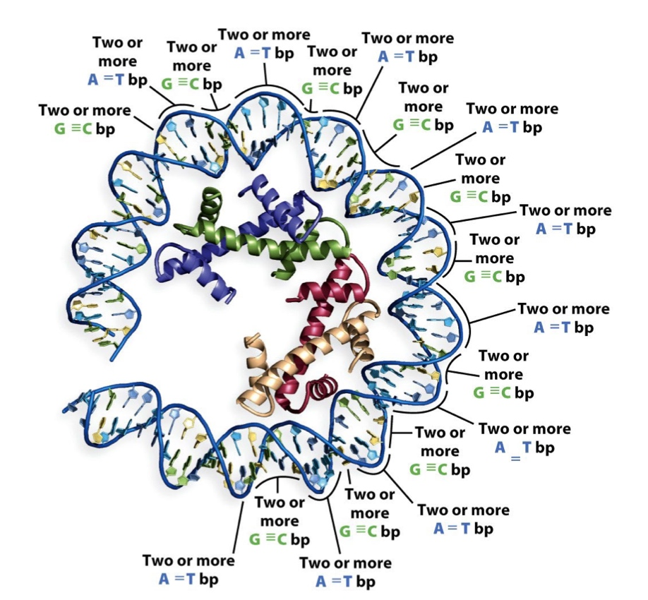
Nucleosome assembly requires histone chaperones
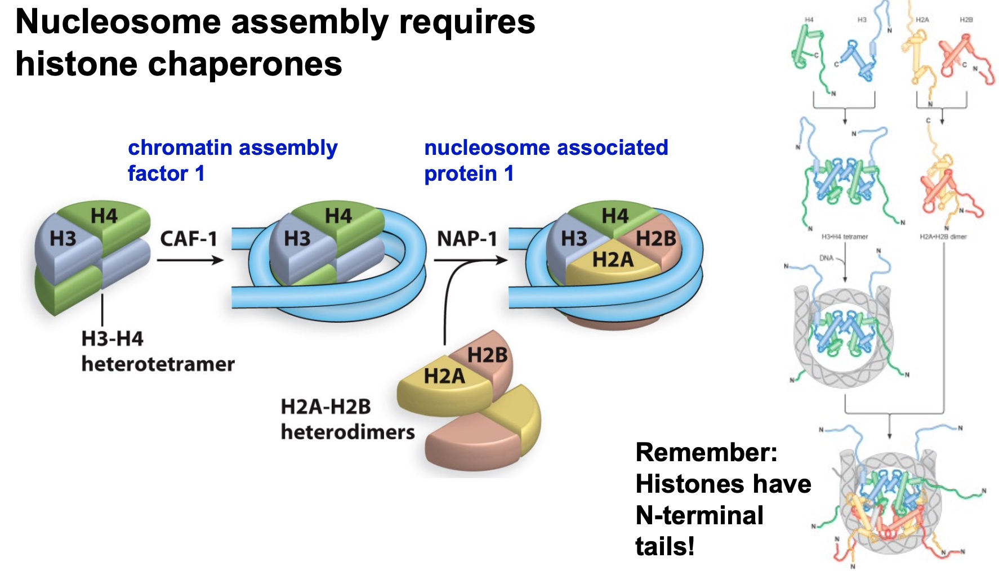
Histone tails extrude far from the nucleosome
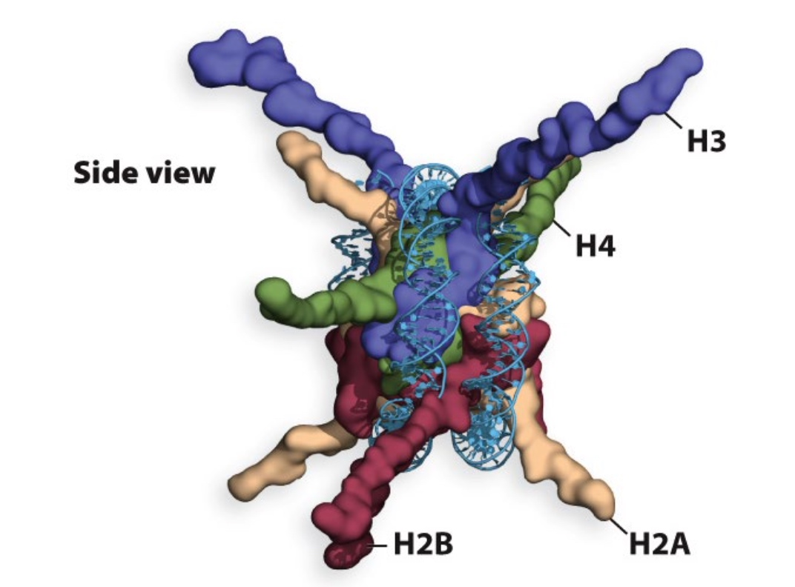
Histone tails can be modified in several ways
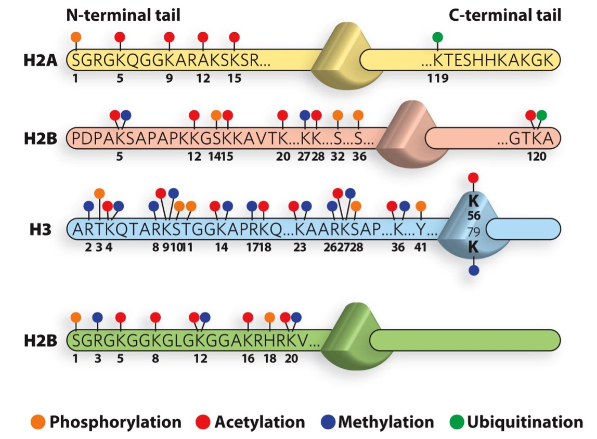
Uniquitin is a small polypeptide
- Ubiquitin can be linked to itself, creating di-ubiquitin, tri-ubiquitin, and poly-ubiquitin chains
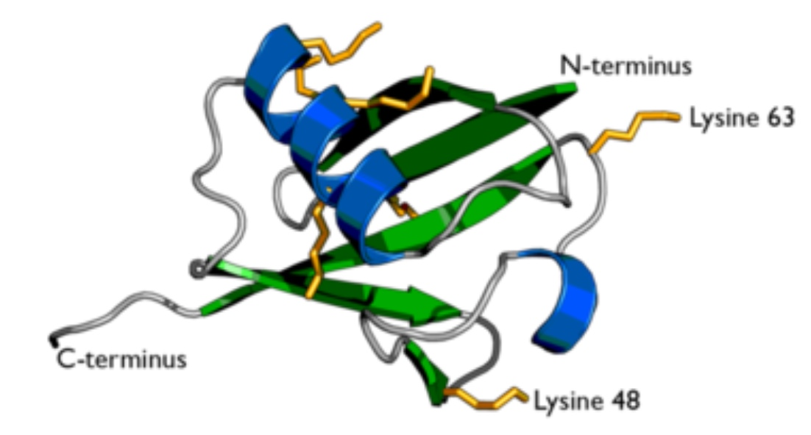
Enzymes catalyze histone modifications
Acetyltransferase, deacetylase, methyltransferase
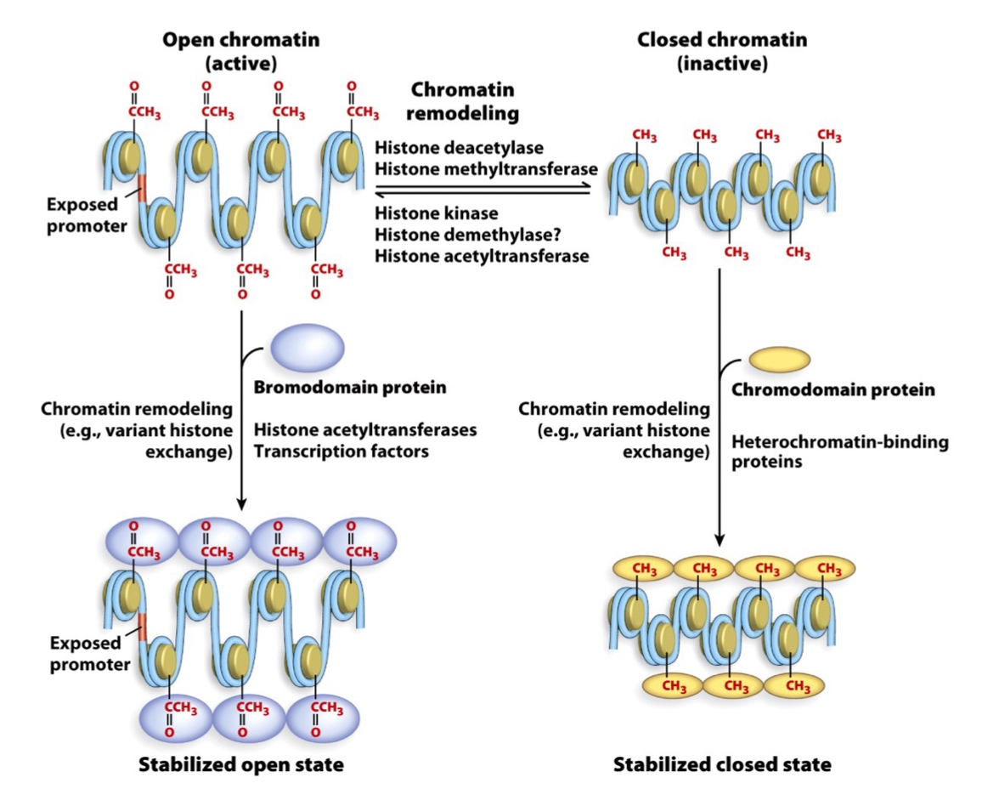
Other Histone variants are found in specialized regions of the genome
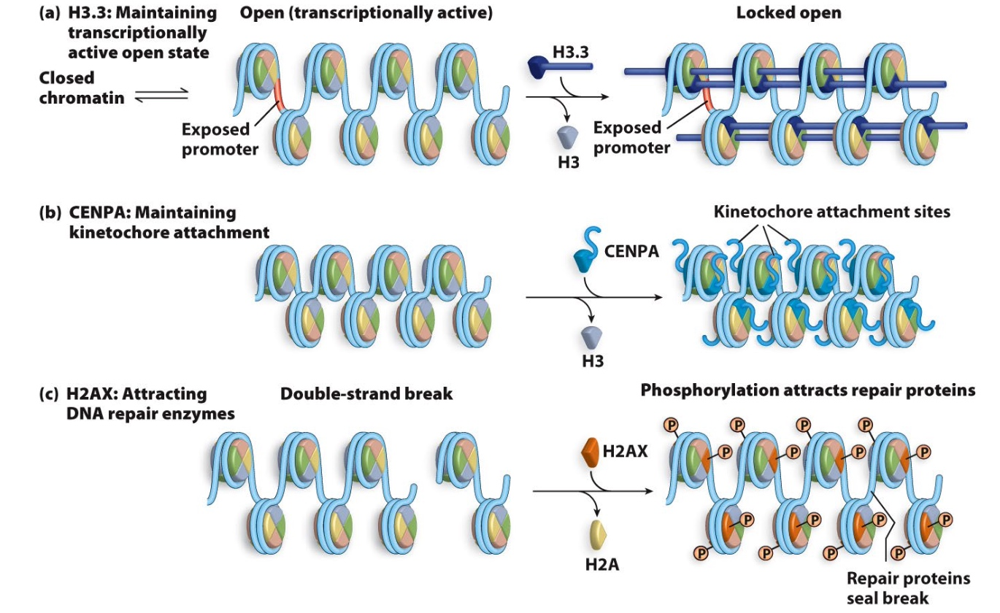
Determining if nuleosomes are present:micrococcal nuclease (MNase) digestion
MNase cuts preferentially between nucleosomes in the linker DNA
If you use a low concentration
of MNase, then cutting will occur randomly along the length of the genomic DNA fragments
(much like a DNase footprinting assay)
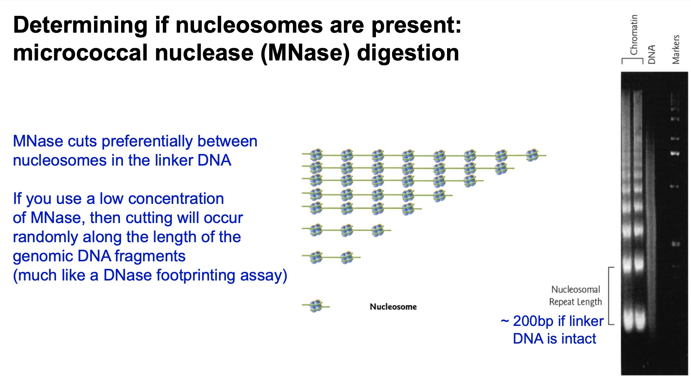
Poll Everywhere
Here is a figure showing the results of MNase digestion of nucleosomal DNA
in the absence or presence of histone H1.
What do these results suggest that histone H1 does to chromatin?
- A. H1 compacts chromatin
- B. H1 relaxes chromatin
- C. H1 does not change chromatin
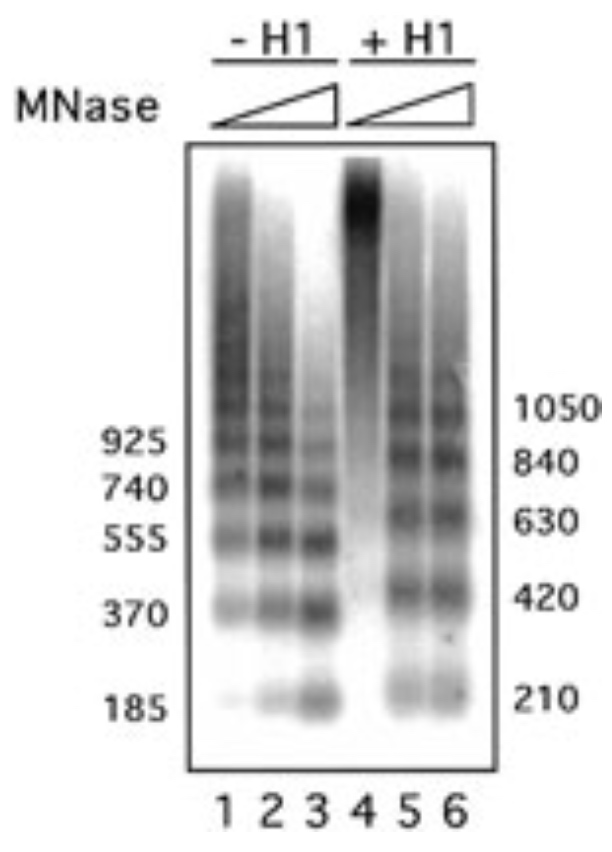
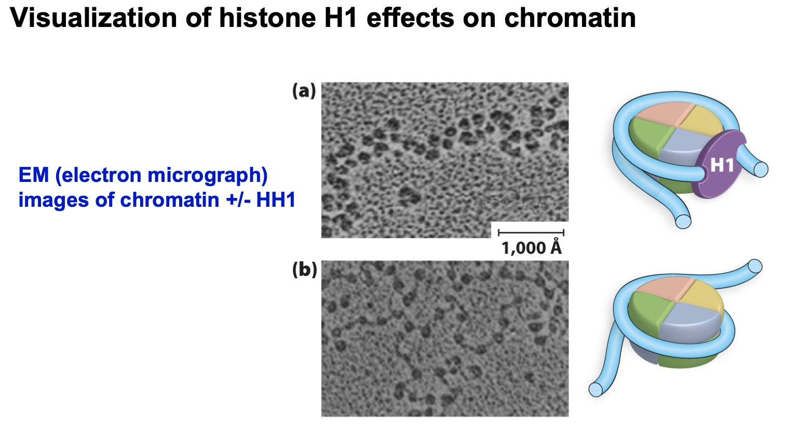